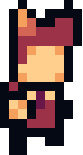

Um jogo que não foi terminado, e nunca será, apenas mais um de meus fracassos
 JogarÉ um pouco bugado, mas eu pessoalmente gostei bastante
JogarEu faço jogos pra jams e quase nunca termino, sempre desisto no caminho ao travar em alguma mecânica.
Não é preciso saber mais sobre mim do que isso, ninguém merece.